Class overview
You learning to teach the computer to learn from data
- How?
- Find a general rule (i.e., 일반화 성능 향상, 오버피팅 방지)
- That explains data given only as a sample of limited size
- According to some measurement of accuracy or error
- 한마디로, finding signals among the noise
- 지금까지 배운 방법론들
- Supervised learning
- Data are sample of input-output pairs
- Find input-output mapping
- Regression, classification, etc
- Unsupervised learning
- Data are sample of objects
- Find some common structure
- Clustering, etc.
- Text mining
- Supervised learning
- 오늘 배울 것: 여전히 핫한 알고리즘, SVM, and yet another supervised learning algorithm
- 앞으로 남은 세 시간:
classes[-3]: Semisupervised learning + A touch of visualizationclasses[-2]: Big data technologies: Hadoop & spark + Tips for your examclasses[-1]: 대망의 기말고사
SVM: Support vector machines
Classification examples
- Sheep vector machines
- Using the existing sheep distributions (the training set), determine whether the new sheep belongs with the white sheep or the black sheep.
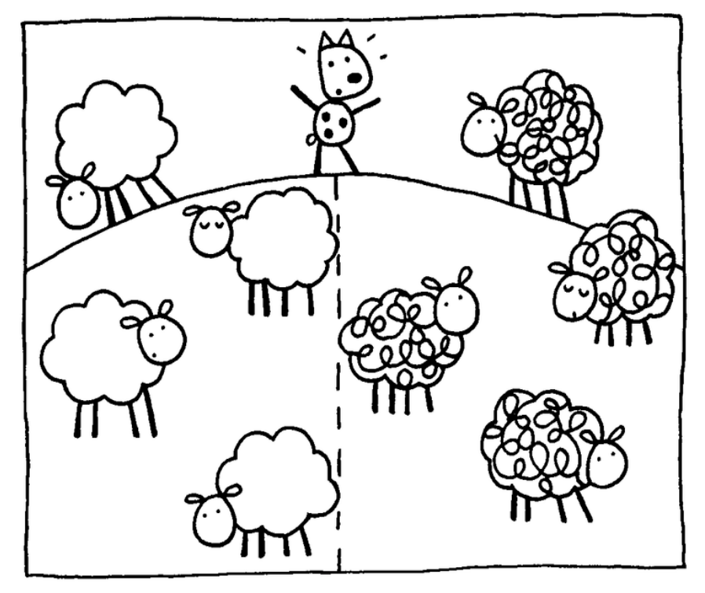
- Using the existing sheep distributions (the training set), determine whether the new sheep belongs with the white sheep or the black sheep.
- Spam filtering
- Using word occurrences in existing email documents, determine whether a new email is spam or ham.
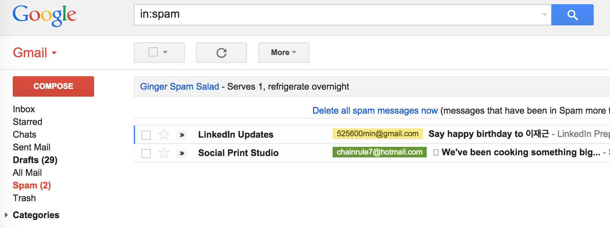 - Instance space: $x \in X$ ($|X| = n$ data points)
- Binary or real-valued feature vector $x$ of word occurrences
- $d$ features (words + other things, d~100,000+)
- Class: $y \in Y$
- $y$: Spam (+1), Ham (-1)
- Using word occurrences in existing email documents, determine whether a new email is spam or ham.
| viagra | learning | the | dating | nigeria | is_spam |
|---|---|---|---|---|---|
| 1 | 0 | 1 | 0 | 0 | 1 |
| 0 | 1 | 1 | 0 | 0 | -1 |
| 0 | 0 | 0 | 0 | 1 | 1 |
Linear binary classification
- There may exist many solutions that separate the classes exactly
- Usually, we find the one that will give the smallest generalization error
- This is the problem of choosing the or decision boundary, or hyperplane
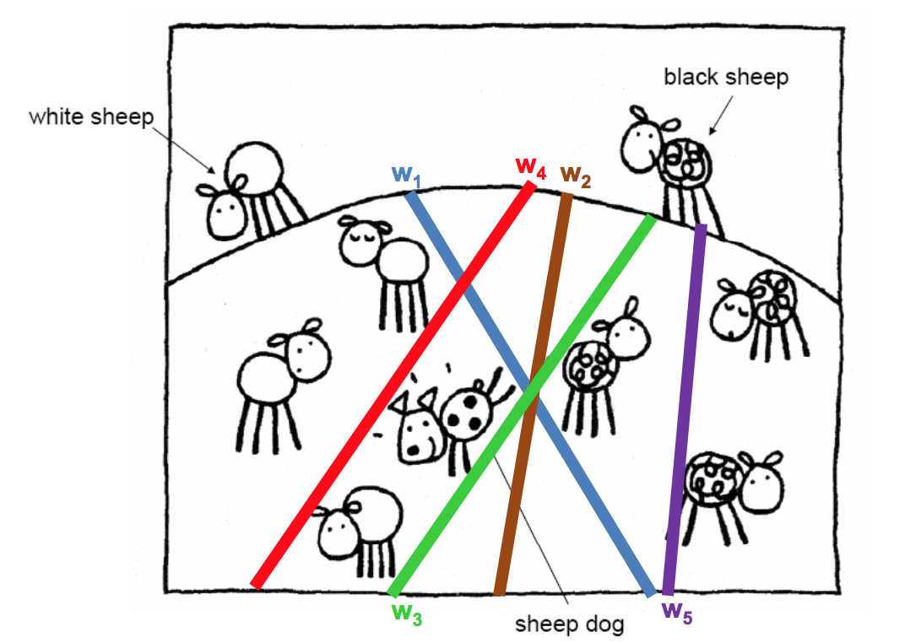 - Input: Binary/real valued vectors $x$ and labels $y$
- Goal: Find real valued vector $w$
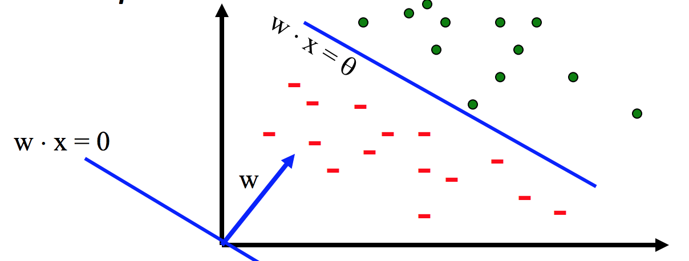 - Each feature has a weight $w_i$
- Prediction is based on the weighted sum: $f(x) = \sum w_i x_i = w \cdot x$
- If the f(x) is
- Positive: Predict +1 (i.e., is sheep, is spam)
- Negative: Predict -1 (i.e., is not sheep, is ham)
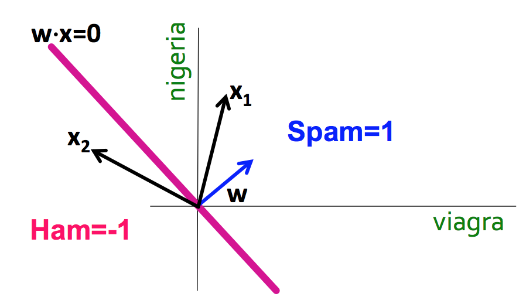
SVM, the maximal margin classifier
- Idea:
- Distance from the separating hyperplane corresponds to the "confidence" of prediction
- In the image below, we are more sure about the class of A and B than of C
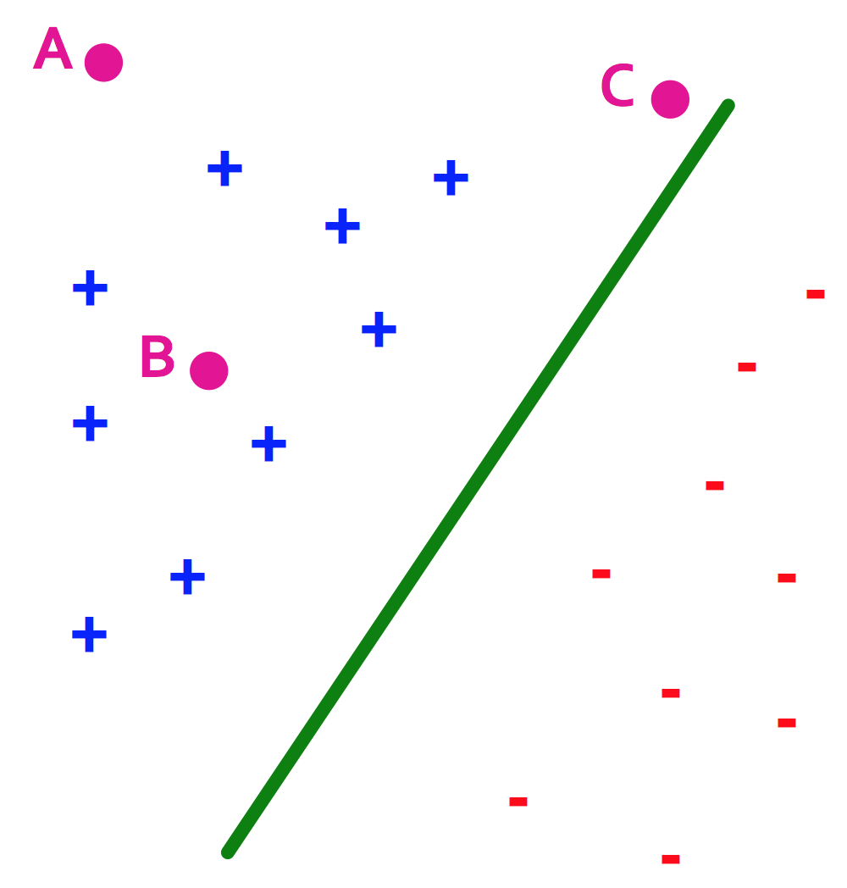
- SVM finds the decision boundary with concept of maximizing this distance, or margins
- Margin $\gamma$: The perpendicular distance between the decision boundary and the closest of the data points (left figure below).
- Support vectors: Maximizing the margin leads to a particular subset of existing data points (right figure below).
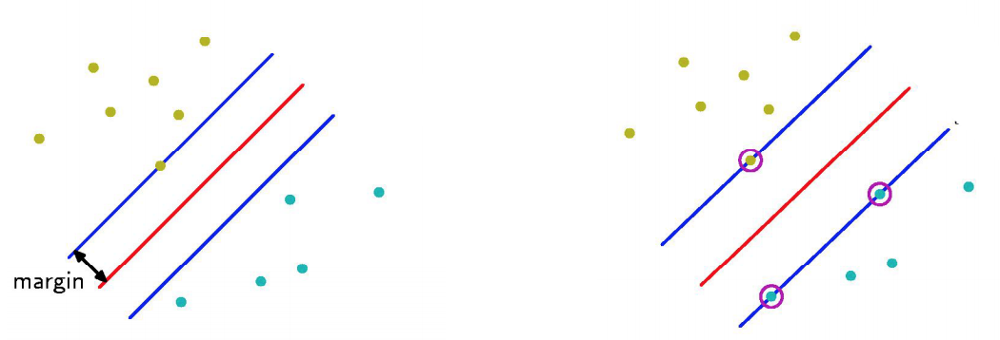
- Why is maximizing $\gamma$ a good idea?
- Remember: Dot product $A \cdot B = |A||B|cos\theta$
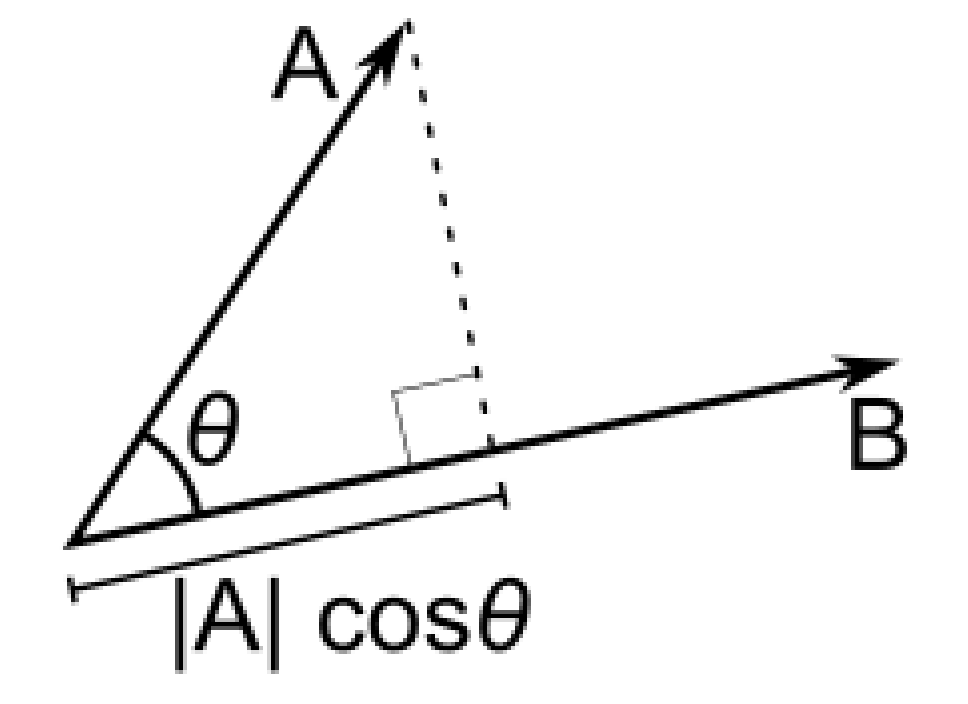 - Let:
- Line $L = w \cdot x + b = 0$
- Weight $w = [w_1, w_2]$
- Point $A = [x_1^{(A)}, x_2^{(A)}]$
- Point $M = [x_1^{{(M)}}, x_2^{{(M)}}]$
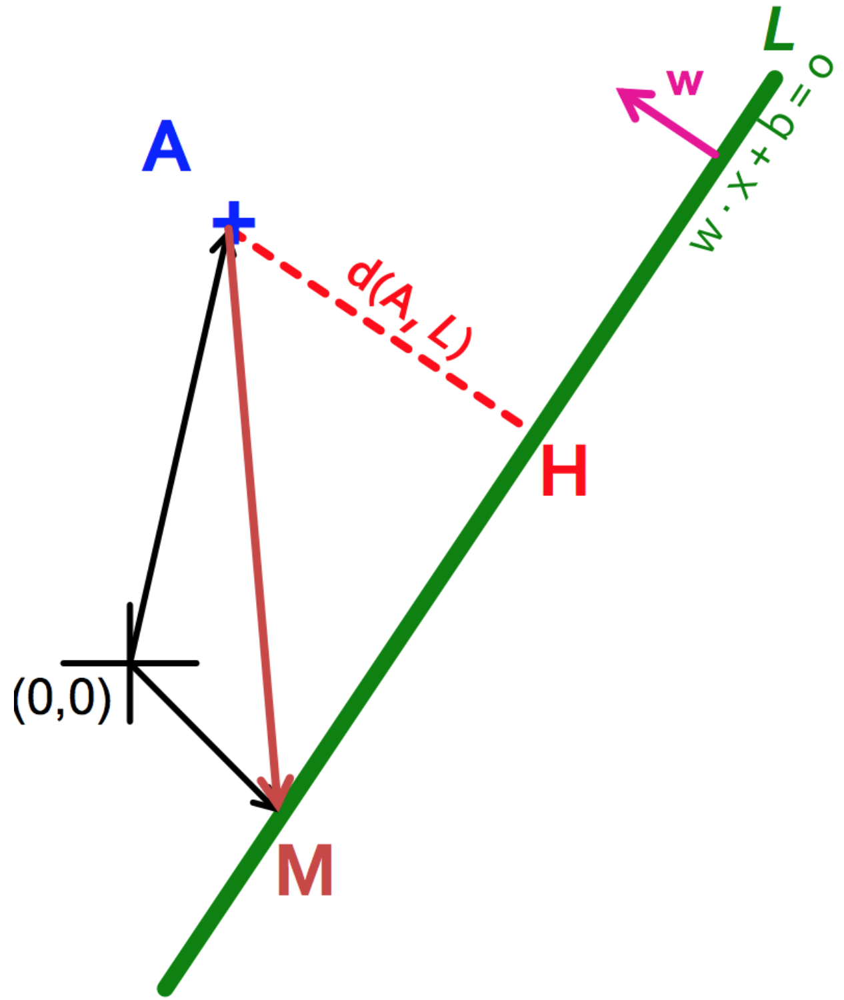
- Then the distance between A, L: $$\begin{align} d(A, L) & = |AH|\\ & = |(A-M) \cdot w|\\ & = |(x_1^{(A)} - x_1^{(M)}) w_1 + (x_2^{(A)} - x_2^{(M)}) w_2|\\ & = x_1^{(A)} w_1 + x_2^{(A)} w_2 + b\\ & = w \cdot A + b \end{align}$$
- Prediction = $sign(w \cdot x + b)$
- "Confidence" = $(w \cdot x + b)y$
- For i-th data point: $\gamma_i = (w \cdot x^{(i)} + b)y^{(i)}$
- Therefore, the objective function becomes:
- max $\gamma$ s.t., $y^{(i)}(w \cdot x^{(i)} + b) \geq \gamma$ ($\forall i$)
- Good according to 1) intuition 2) theory and 3) practice
- Remember: Dot product $A \cdot B = |A||B|cos\theta$
- Normalized weights
- Problem: With this equation, scaling $w$ increases margin! (i.e., $w$ can be arbitrarily large)
- If $(w \cdot x + b)y = \gamma$, then $(2w \cdot x + 2b)y = 2\gamma$
- Solution: work with normalized $w$, and require support vectors to be on the margin
- $\gamma = (\frac{w}{|w|} \cdot x + b)y$
- $w \cdot x^{(i)} + b = \pm 1$
- Problem: With this equation, scaling $w$ increases margin! (i.e., $w$ can be arbitrarily large)
- Margin maximization == weight minimization?
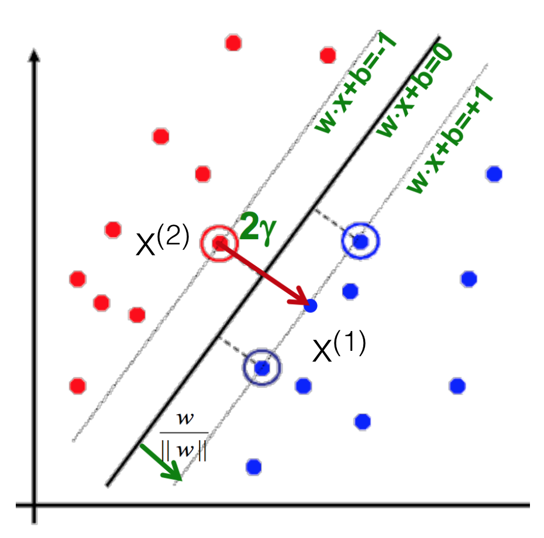- We know three things
- $x^{(1)} = x^{(2)} + 2 \gamma \frac{w}{|w|}$
- $w \cdot x^{(1)} + b = +1$
- $w \cdot x^{(2)} + b = -1$
- Therefore
- $w \cdot x^{(1)} + b = +1$
- $w (x^{(2)} + 2 \gamma \frac{w}{|w|}) + b = +1$
- $(w \cdot x^{(2)} + b) + 2 \gamma \frac{w}{|w|} = +1$
- $\gamma = \frac{1}{|w|}$
- max $\gamma \thickapprox$ max $\frac{1}{|w|} \thickapprox$ min $|w| \thickapprox$ min $\frac{1}{2} |w|^2$
- Which finally gives
- min $\frac{1}{2} |w|^2$ s.t., $y^{(i)}(w \cdot x^{(i)} + b) \geq 1$ ($\forall i$)
- This is called SVM with "hard" constraints
- We know three things
Soft margin SVMs
- Relax constraints
- Allowing the margin constraints to be violated
- In other words, allow some of the training data points to be misclassified
- min $\frac{1}{2} |w|^2 + C \sum_{i=1}^n \xi_i$ s.t., $y^{(i)}(w \cdot x^{(i)} + b) \geq 1 - \xi_i$ ($\forall i$)
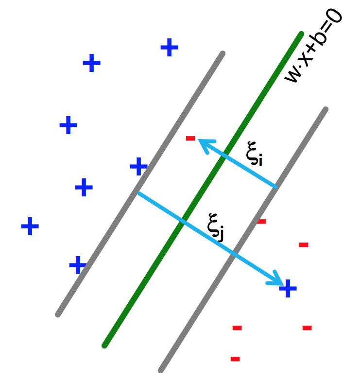
Kernel methods
Warning: NOT related to shell/kernels in the OS
- Life is not so easy, not all problems are linearly separable
- If so, choose a mapping to some (high dimensional) dot-product space, namely the feature space: $\Phi: X \to H$
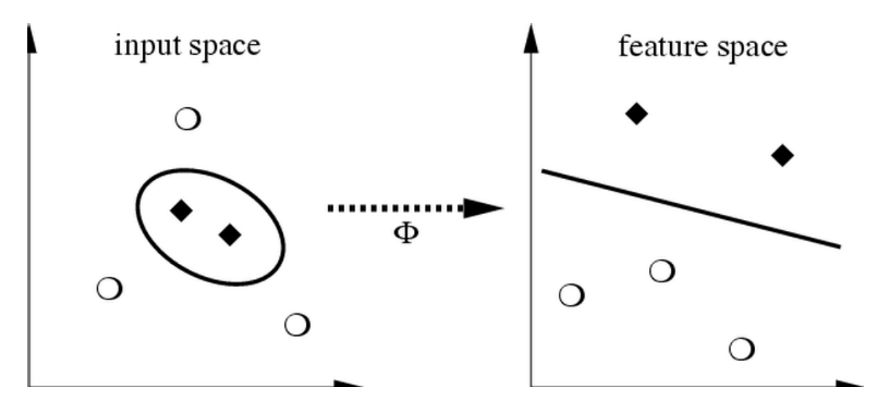
- Mercer's condition
- If a symmetric function $K(x, y)$ satisfies $\sum_{i,j=1}^{M} a_ia_jK(x_i,x_j) \geq 0$
for all $M \in \mathbb{N}, x_i, a_i \in \mathbb{R}$
there exists a mapping function $\Phi$ that maps x into the dot-product feature space and $K(x, y) = <\Phi(x), \Phi(y)>$ and vice versa.
- If a symmetric function $K(x, y)$ satisfies $\sum_{i,j=1}^{M} a_ia_jK(x_i,x_j) \geq 0$
- Function $K$ is called the kernel.
- Types of kernels
- Linear kernels: $K(x, y) = <x, y>$
- Polynomial kernels: $K(x, y) = (< x, y> + 1)^d$ for $d = 2$
- RBF kernels: $K(x, y) = exp(-\frac{||x-y||^2}{d^2})$
- ...and more!
- Kernels on various objects, such as graphs, strings, texts, etc.
- Enable us to use dot-product algorithms
- Measure of similarity
Programming SVMs
Go to the SVM documents in the Scikit-learn webpage.
- SVC: Support vector classification
- SVR: Support vector regression
- Also see: What is the difference between C-SVM and nu-SVM?
References
- Wikipedia, Support Vector Machine
- Scikit-learn, Support Vector Machines
- Andrew Ng, CS229 Lecture notes: Support vector machines
- Petra Kudova, Learning with kernels and SVM
- support-vector-machines.org (Sometimes, algorithms have websites of their own! See here for more of them.)
Many contents in courtesy of Jure Leskovec and Petra Kudova